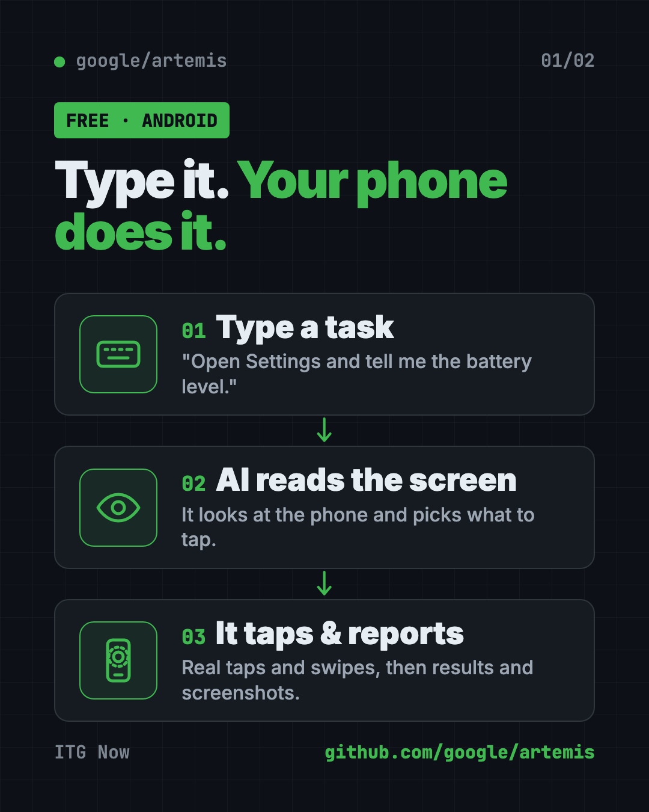
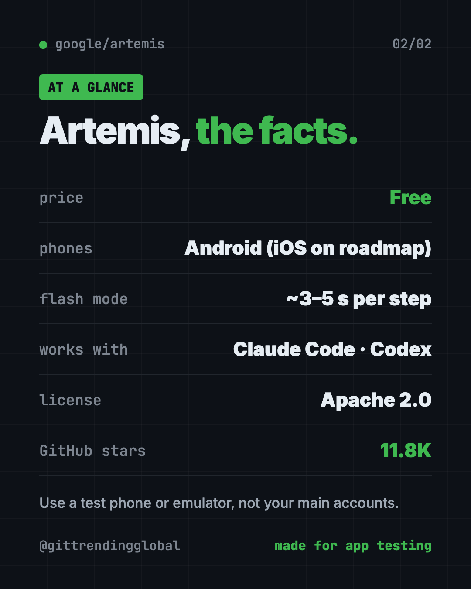

Artemis: Google's Free AI Android Automation Tool
- Published 15 Oct 2026
- Updated 16 Oct 2026
- 7 min read
- License Apache-2.0
- By the ITG Now team
Artemis is free ai android automation from Google's GitHub. You type a task in plain English, and an AI looks at a real Android phone screen and does the taps and swipes for you.
It was built mainly for testing apps, but the demo also shows everyday jobs. This guide covers what it does, who it's for, and how to set it up.
Key takeaways
- Plain English in, real taps out. For example: "Open Settings, find Battery and tell me the current level."
- Free and open source. Apache 2.0 license, about 11.8K GitHub stars.
- Two speeds. "Flash" takes about 3 to 5 seconds per step. "Pro" plans and checks its work at about 15 to 40 seconds per step.
- Works with AI coding helpers like Claude Code, Codex, Cursor and Google's Antigravity.
- Android only for now. iOS is on the roadmap, not here yet.
What is Artemis?
Artemis is a tool that lets an AI use a phone like a person would. Its README sums it up as letting AI assistants and test suites "use real phones like a human."
It reads the screen, decides what to tap, taps, then looks again. It repeats that loop until the job is done.
The README's demo plans driving routes in Google Maps, adds up the travel times, then opens YouTube to play a Coldplay song. That's three apps in one task.
Who needs AI Android automation?
- App makers who are tired of tapping through every screen before each release.
- QA testers (people who find bugs before users do) who run long test sessions.
- Teams that want a report with screenshots after every test run.
- Tech-curious people who like the idea of telling a phone what to do.
You'll need to type a few commands. It isn't a one-tap app.

How to use Artemis (real examples)
- Check a setting. Type "Open Settings, find Battery and tell me the current level." Artemis taps through and reports back. This example comes straight from the README.
- Test your app's login. From Claude Code or Codex, ask it to build your app, install it on the phone, log in with a test account, and send screenshots of the final page.
- Run a multi-app errand. Like the demo: plan routes in Maps, add up the times, then open YouTube.
- Run long stability tests. Pro mode handles tasks with 100+ steps and can keep watching an app in a loop.
- Replay what happened. The browser control page saves each run so you can watch it again and spot where things went wrong.
💡 Tip: Start with Flash mode for simple jobs. Switch to Pro when a task has many steps or tricky screens.
How does Artemis work?
Artemis reads the phone's screen layout when it can. When an app uses custom designs, it falls back to reading the picture itself, including text it spots in the image.
It has two modes:
| Mode | Speed per step | Good for |
|---|---|---|
| Flash | About 3 to 5 seconds | Simple, routine tasks |
| Pro | About 15 to 40 seconds | Long tasks, planning, checking its own work |
In Pro mode, a "Planner" writes a task plan, an "Operator" does the taps, and a "Checker" reviews the result against your goal. Each tap is checked against the live screen before it happens.
The team reports a 99%+ completion rate on AndroidWorld. That's a test set from Google Research with 100+ multi-step tasks across 20+ apps.
Is Artemis free?
Yes. Artemis is free and open source under the Apache 2.0 license. You can use it at work too.
The AI brain behind it may cost money. The README lists vision models such as Gemini, Claude, GPT-4o and Qwen-VL. If you use a paid AI service, that service bills you for what you use.
How to install Artemis on Mac, Windows and Linux
You need an Android phone or an emulator (a pretend phone on your computer). On a real phone, turn on USB Debugging in Developer Options, then plug it in with a cable.
The start script installs the helper tools by itself: ADB (talks to the phone), scrcpy (mirrors the screen), FFmpeg (handles video) and Python packages.
On Mac or Linux, open Terminal. Copy and paste this:
git clone https://github.com/google/artemis.git && cd artemis
./start.sh
On Windows, open PowerShell. Copy and paste this:
git clone https://github.com/google/artemis.git
cd artemis
.\start.bat
A control page then opens at http://localhost:8000 in your browser. It has a wizard to connect your phone, live screen mirroring, a box to type tasks and replays of past runs.
Prefer the terminal? Copy and paste this:
uv run artemis run "Open Settings, find Battery and tell me current level" --profile flash
The start script also offers to connect Artemis to your AI coding apps. To do that later for all of them, copy and paste this:
uv run artemis mcp --install all
⚠️ Heads up: The first task installs a small "Artemis Accessibility Helper" on your phone. You'll see a notification and a new Accessibility entry. The README says it listens only on the phone and sends nothing elsewhere. Remove it any time with
uv run artemis helper uninstall.

Let Claude or Codex set it up for you
Claude Code and OpenAI Codex are AI helpers that can run setup steps on your computer. You paste a request, they do the steps, and you approve each one.
Copy and paste this:
Please help me set up Google Artemis from github.com/google/artemis.
1. Check if I'm on Mac, Windows or Linux and tell me which start script to use.
2. Walk me through turning on USB Debugging on my Android phone.
3. Clone the repo and run the start script. Explain each step before you run it.
4. Connect Artemis to this AI helper using its MCP install command.
5. Run one safe test: open Settings and read the battery level.
Then try asking:
Use Artemis to open my app on the phone, go to the login screen, and send me a screenshot.
Explain the difference between Artemis Flash and Pro mode for my task.
Artemis says no device found. Help me check the cable and USB Debugging.
Artemis at a glance
| Price | Free (AI model use may cost money) |
| Works offline | No, it calls an AI vision model |
| Platforms | Android phones and emulators, run from Mac, Windows or Linux |
| License | Apache 2.0 |
| Speed | About 3 to 5 seconds per step (Flash) |
| GitHub stars | About 11.8K |
| Best for | App makers and testers |
Our take
Artemis makes AI Android automation feel simple: type a sentence, watch the phone. For app teams, that could replace hours of boring tap-through testing.
What we like:
- Plain English tasks, with no test scripts to write.
- A browser page that mirrors the phone and replays runs.
- Two clear speed modes.
- Plugs into the AI coding helpers people already use.
- Honest about the phone helper it installs and how to remove it.
What to watch for:
- Android only today.
- Setup needs a cable, Developer Options and a few commands.
- AI model use can add a bill.
- An AI tapping on your phone can make mistakes. Use a spare phone or an emulator, not your main accounts.
⚠️ Heads up: Don't point Artemis at banking or shopping apps on your personal phone. Keep it to test devices and test accounts.
Like AI that clicks for you? See Agent Browser, which lets AI use websites. Building apps with AI? Read our gstack guide. For the month's other big AI stories, see our September 2026 AI news roundup.
FAQ
What does Google Artemis do?
It lets an AI control a real Android phone from plain English instructions. It's mainly used to test apps, but it can also do everyday multi-app tasks.
Is Artemis free?
Yes. It's free and open source under the Apache 2.0 license. The AI model it uses may cost money if you pick a paid service.
Does Artemis work on iPhone?
Not yet. Artemis supports Android phones and emulators today. iOS support is listed on its roadmap.
Can Claude Code control my Android phone with Artemis?
Yes. Artemis includes an MCP server, a plug that lets AI helpers use outside tools. It works with Claude Code, Codex, Cursor, Windsurf and Antigravity.
Is Artemis safe to use on my phone?
It installs a small accessibility helper that the README says sends nothing off the phone. Still, use a test phone or emulator, since an AI can tap the wrong thing.
Get Artemis: github.com/google/artemis
More free agents tools
- REA REA (Reverse Engineer Anything) lets an AI agent look inside an app and explain how a feature works, with proof. What it does, what it misses, and the risks.
- DBX DBX is a free database client that opens 100+ kinds of databases in a 25 MB app. Its AI helper turns plain English into database queries for you.
- Moli Moli is a free headless browser for AI agents. It lets AI helpers read, search and use websites fast, while using far less memory than Chrome.
- DeepSeek Harness DeepSeek Harness is DeepSeek's free, open-source AI agent. Every feature is a plugin you can swap or build, and it runs in your browser with one command.
- OfficeCLI OfficeCLI is free AI for Word, Excel and PowerPoint. It lets AI helpers create, read and edit real Office files, with no Office install needed.
- OpenCut OpenCut is a free CapCut alternative you can use in your browser today. It's open source, and a full rewrite for desktop, mobile and AI agents is on the way.
Latest AI news
- Meta gives away its big Muse Spark AI for free
- Google AI Studio spotted with managed agents hub
- JPMorgan private bank uses AI to help advisers
- Brookfield opens new office in Doha, Qatar
Keep reading

Twenty: Free Salesforce Alternative, Open Source CRM
Twenty is a free Salesforce alternative: an open source CRM to track customers, deals and emails. Host it yourself for free or use their cloud.